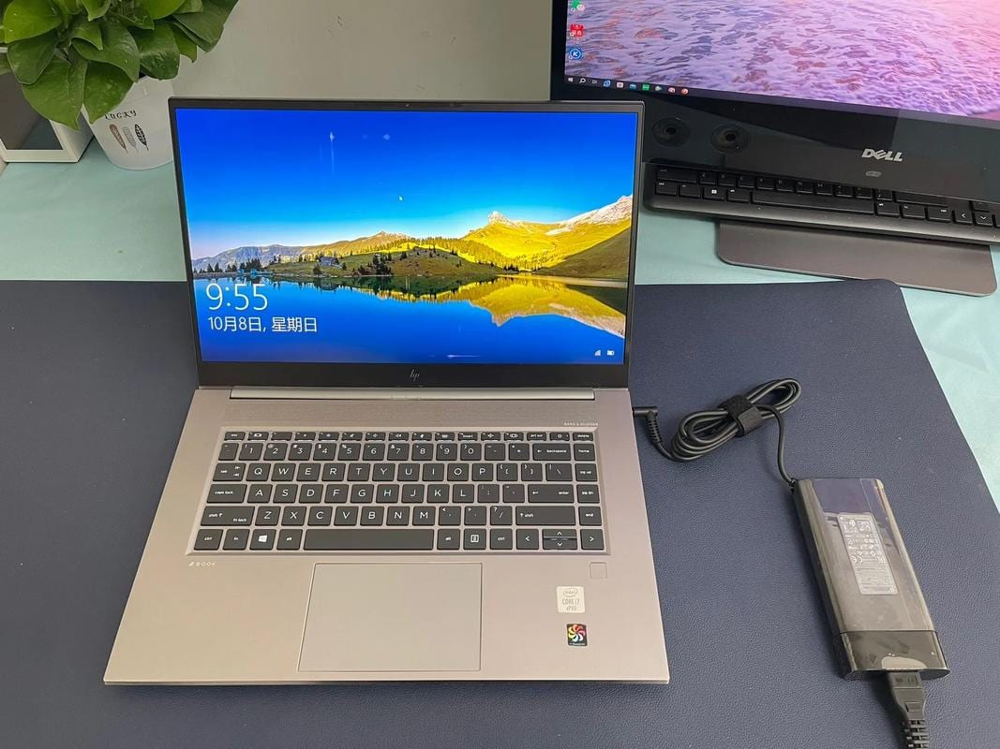

惠普 ZBook Studio G7

1.8 公斤的移动工作站，DreamColor 屏专业之选。
客观评测
ZBook Studio G7 搭载至强 W-10855M + Quadro T2000 专业显卡，32GB + 1TB NVMe 在 SolidWorks 等 ISV 认证软件中稳定运行。15.6 英寸 4K DreamColor 屏出厂校色，覆盖 100% DCI-P3、Delta E 小于 2。83Wh 电池实测续航 6-8 小时，1.87kg 机身通过 MIL-STD-810G 军规测试。
主观点评
工作站总给人笨重印象，但 Studio G7 拿在手里更像一台精致的商务本：铝合金机身棱角利落，键盘手感扎实。它不追求游戏帧数，追求的是连续渲染一整夜不蓝屏、颜色所见即所得的确定性。对于建筑、工业设计从业者，这种“靠谱”比任何跑分都重要。它价格不菲，但当你交付的图纸颜色分毫不差时，会觉得这笔钱花得值。
优点与不足
- Quadro 专业显卡通过主流 ISV 软件认证
- 4K DreamColor 屏出厂校色，色彩精准
- 至强处理器与 ECC 内存选项，稳定性出众
- 价格比同配置消费本高出不少
- 高负载下风扇噪音明显
- Quadro 显卡游戏性能不及同价位 GeForce
参数规格
| 处理器 | 英特尔酷睿 i7-10750H / 酷睿至强 W-10855M |
|---|---|
| 显卡 | NVIDIA Quadro T1000/T2000（4GB GDDR6，ISV 认证） |
| 内存 | 32GB DDR4-2666（双插槽，最大 64GB） |
| 存储 | 1TB PCIe NVMe SSD（双 M.2 插槽） |
| 屏幕 | 15.6 英寸 4K UHD，100% DCI-P3，DreamColor 校准 |
| 电池 | 83Wh，实测约 6-8 小时 |
| 接口 | Thunderbolt 3×2、USB-A×2、HDMI 2.0 |
| 重量 | 约 1.87kg |
| 系统 | Windows 10 Pro for Workstations |
| 可靠性 | MIL-STD-810G 军规测试、HP Sure Start 安全芯片 |